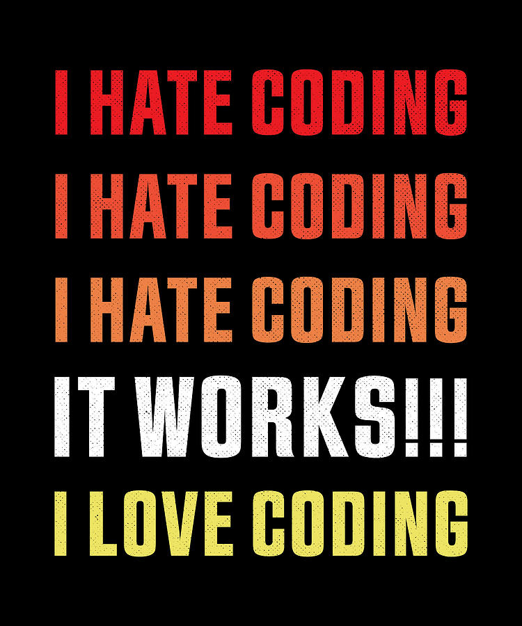

This class is a lot less stressful since I took GRC 338.
Sometimes I think if it’s not stressful enough.
I kind of wish the lab assignments were more in-depth and covered more advanced topics; I feel like I have not been learning a lot the past few weeks.
What comes easily to some can be really complicated to others. It’s important that we go slow when we’re building the foundation.
I sometimes forget how helpful it is to go back to the lecture or look at my notes that I took when watching, it really helped me a lot this week.
That’s one of the reasons we have videos and not traditional lectures.
This assignment made me gain a deeper understanding of when it’s best to use ems and when it’s best to use a percentage in the flex basis values. It also made me understand how we portion up the width of flex containers, and how it must be under the minimum width.
I’m glad it’s working.
Missing lab can be a little frustrating/stressful since I couldn’t ask my peers for help, but I got through it!
Yes. That’s why we have the labs.
ALWAYS check your files in Firefox!
Please, do.
I am going to use brackets instead of VS to code because it has live changes.
As I’ve mentioned several times in GRC 338, live changes are not reliable. You should get in the habit of saving the file and refreshing it in the browser.
I find it helpful to try different values for the flex basis to make sure that I find the most accurate width.
That’s the way to do it.
It’s good to struggle with the code and sometimes intentionally do things incorrectly to observe the effect they have on the webpage.
Very true. You can’t really break it.
Annali was helpful!
Elianna helped explained how to use the max width to estimate which numbers to test.
Grace and I worked through the lab together, which was awesome! üòÉ.
Lily, Hayley, and I helped each other troubleshoot during lab.
Shout out to Taylor [Leslie] for working through changing the text box with me :).
Tanya and Zara helped me lots, thanks to them both!
Zara and Tanya were very helpful this lab!
I forgot what display: block; meant, but this online resource helped remind me in an easy-to-understand way.
1st day working as a dev: ü§îLet me google that
— Molly Struve ü¶Ñ (@molly_struve) July 29, 2019
After 3 years working as a dev: ü§îLet me google that
After 7+ years working as a dev: ü§îLet me google that
Somethings don't change no matter how much experience you gain #CodeNewbie
This website helped me visualize flexbox sizing a little bit more](https://webdesign.tutsplus.com/tutorials/a-comprehensive-guide-to-flexbox-sizing--cms-31948).
Thanks for sharing, Abby. And it seems like I agree with this tutorial: “This is because flex-shrink defines how much a flex item should shrink compared to other items. Thus, larger flex-shrink values lead to smaller elements, which can make things pretty confusing!”
HTML question, but when you have dropdown menus to select a state (Alabama, Alaska, etc), do they always put all options in there manually?
I wouldn’t say manually. It has to come from somewhere. In my case, I didn’t type each one of them, but didn’t include in the HTML source. Most times, it’ll probably look for the values in a database that can be dynamically populated.
I’m curious to learn more about the
<label>and<textarea>tags in the future for use in my own code.
Not much into them. “The <label> HTML element represents a caption for an item in a user interface.” While “the <textarea> HTML element represents a multi-line plain-text editing control, useful when you want to allow users to enter a sizeable amount of free-form text, for example a comment on a review or feedback form.”
After learning more about ratios when using flexbox, I realized that I need to refresh my math skills….
It’s not even that advanced math.
Don’t mess with flex-shrink! May fixture problem in the short term, but gets confusing as other parts start moving / needing changes.
That’s how I see it at least.
I actually enjoy using flexbox to create layouts, it’s like solving a puzzle.
You’re my people.
It only really makes sense to set the flex-basis value to a percentage when your flex-grow and flex-shrink are both 0.
Not necessarily.
The concept of flex-basis clicked in my brain - it’s the minimum but can grow!
You got it.
GitHub wasn’t updating after I changed my code, so I deleted the files and reuploaded them per Sara’s advice and it worked immediately:).
Oh… I can’t see why.
Shift refresh might help when I can’t see changes on GitHub.
Yes. It can.
After reviewing in class when to use a grid container instead of flexbox and vice versa, I want to experiment more with visuals to understand the concept better.
Oh, we will.
One thing took me like 20 minutes to figure out, but once I did, it was rewarding.

Brilliant knock knock joke: Knock knock.Who’s there?Tank.Tank who?You’re welcome!
There’s no such thing as a brilliant knock-knock joke. But thanks, I guess, Ayesha.
Helvetica and Times New Roman walk into a bar. “Get out of here!” shouts the bartender. “We don’t serve your type.”.
Thanks, Caroline.
Can’t wait for next week!
I can’t either.